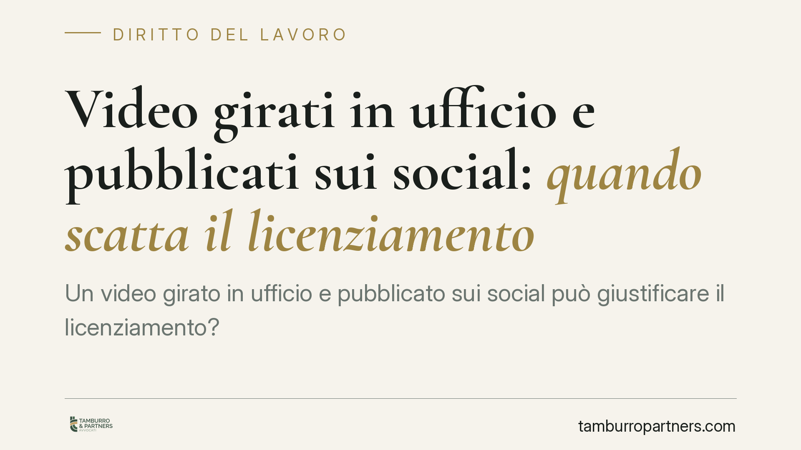

Video girati in ufficio e pubblicati sui social: quando scatta il licenziamento
Un video girato in ufficio e pubblicato sui social può giustificare il licenziamento? La questione tocca sia il datore, che deve valutare proporzionalità e prova, sia il lavoratore, che spesso sottovaluta la differenza tra uno scherzo in chat privata e un contenuto diffuso online. Vediamo i confini della giusta causa e cosa cambia nel pubblico impiego.

Il fatto
Il tema torna di attualità per effetto di pronunce di merito su dipendenti, in particolare pubblici, che hanno diffuso sui social video realizzati sul luogo di lavoro. Quando il contenuto risulta lesivo dell'immagine o del decoro dell'ente, la reazione datoriale può arrivare fino alla sanzione espulsiva. La domanda è se e a quali condizioni quella reazione regga davanti al giudice.
La risposta non è automatica. Non ogni video girato in ufficio legittima un licenziamento: tutto ruota attorno alla gravità concreta del comportamento e alla sua idoneità a ledere il rapporto di fiducia.
Inquadramento normativo
Nel lavoro privato il riferimento è l'art. 2119 cod. civ., che consente il recesso senza preavviso per una causa che non consenta la prosecuzione, nemmeno provvisoria, del rapporto. La misura della gravità si apprezza alla luce dell'art. 2106 cod. civ. (proporzionalità della sanzione) e delle previsioni dei contratti collettivi.
Nel pubblico impiego il quadro è più rigido. L'art. 55-quater del d.lgs. 165/2001 elenca ipotesi di licenziamento disciplinare *testualmente tipizzate*: false attestazioni di presenza, assenze ingiustificate reiterate, insufficiente rendimento, condanne penali qualificate, e simili. La diffusione di video lesivi del decoro dell'amministrazione non figura, di regola, tra queste fattispecie tipiche. Essa rileva piuttosto come violazione dei doveri di comportamento del dipendente pubblico — codificati nel codice di comportamento e richiamati dal CCNL funzioni locali 2019-2021 (art. 72) — la cui gravità va misurata ex art. 2106 cod. civ. per valutare se integri una giusta causa.
È una distinzione che conta: non si tratta di applicare un automatismo normativo, ma di dimostrare che la condotta ha concretamente compromesso il rapporto fiduciario e il prestigio dell'ente.
Il discrimine: chat privata o profilo pubblico
Il punto decisivo è la diffusione. Un video rimasto in una chat privata tra colleghi ha una potenzialità lesiva molto diversa da un contenuto caricato su un profilo social pubblico, accessibile a una platea indeterminata e associabile all'ente.
La giurisprudenza di merito tende a valorizzare proprio questo elemento: la pubblicazione su un profilo aperto, con riconoscibilità dei luoghi o dei soggetti, aggrava la condotta perché amplifica il danno reputazionale. L'orientamento richiamato dalla fonte fa capo a una pronuncia del Tribunale di Napoli (estremi da verificare nel testo integrale), coerente con questa lettura.
Privacy e disciplinare: due piani distinti
Un equivoco frequente è confondere il profilo disciplinare con quello della protezione dei dati. Sono piani autonomi.
Se il video riprende colleghi o utenti senza consenso, può configurarsi un trattamento illecito di dati personali ai sensi del d.lgs. 196/2003, come novellato dal d.lgs. 101/2018, in combinato con il Reg. UE 2016/679. Ma l'eventuale illecito privacy non sostituisce la valutazione disciplinare: il datore deve comunque provare la gravità della condotta rispetto al rapporto di lavoro, a prescindere dalle conseguenze sanzionatorie in sede di protezione dati.
Il test di proporzionalità
Il licenziamento è la sanzione massima. Il giudice verifica se misure meno afflittive sarebbero state adeguate: la sanzione espulsiva regge solo se la condotta, per intensità e riflessi, rende impossibile la prosecuzione del rapporto. Pesano il contenuto del video, l'ampiezza della diffusione, il ruolo del dipendente, l'eventuale recidiva e il danno effettivo all'immagine.
Se il licenziamento è illegittimo
Nel pubblico impiego il regime sanzionatorio dell'illegittimità del recesso è peculiare. Trova applicazione l'art. 63 del d.lgs. 165/2001, che — secondo gli orientamenti consolidati — affida al giudice la tutela reintegratoria in favore del dipendente in caso di licenziamento illegittimo, con un assetto distinto da quello del lavoro privato post Jobs Act. Per questo la ricostruzione istruttoria e la proporzionalità della sanzione vanno curate con particolare rigore.
Cosa fare in concreto
- Documentate la diffusione: acquisite e cristallizzate la prova della pubblicazione pubblica (data, piattaforma, platea), distinguendola dalla mera condivisione privata.
- Contestate in modo specifico: indicate con precisione la condotta e il profilo di gravità, richiamando codice di comportamento e CCNL applicabile.
- Valutate la proporzionalità prima di agire: verificate se la sanzione espulsiva sia l'unica adeguata o se siano previste misure conservative.
- Tenete separati privacy e disciplinare: non fondate il recesso solo sull'illecito privacy; costruite autonomamente la lesione del rapporto fiduciario.
- Lato lavoratore, prevenite: evitate di pubblicare su profili aperti contenuti riconducibili all'ufficio; la differenza tra scherzo e giusta causa sta spesso nella visibilità.
Disclaimer
Contributo informativo a cura di Tamburro & Partners Avvocati — Avv. Giuseppe Tamburro. Non costituisce parere legale.
Ogni storia di lavoro ha i suoi tempi.
Se gestisci HR e vuoi un confronto su contenzioso, ispezioni o licenziamenti, scrivi allo studio. Ti rispondiamo entro un giorno lavorativo.